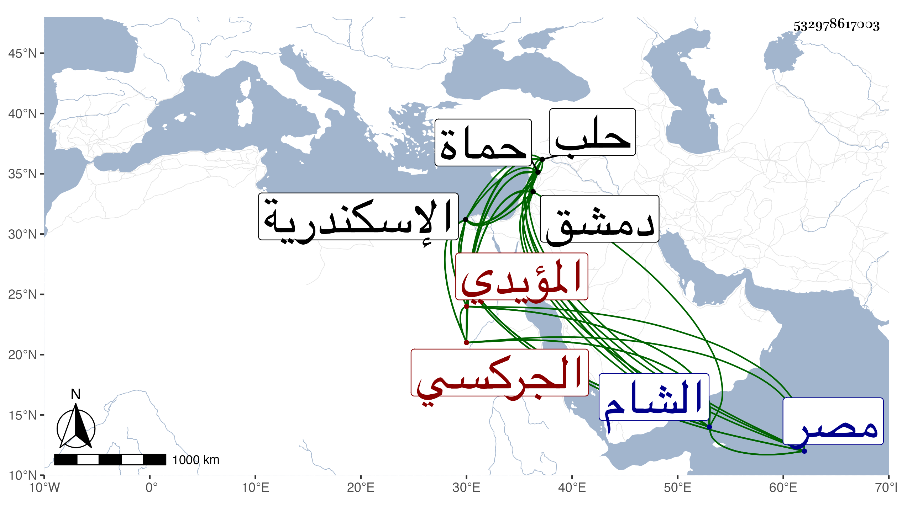

0902Sakhawi.DawLamic.ITO20230111-ara1.EIS1600.532978617003
Biography ID: 532978617003
182
تنم من عبد الرزاق الجركسي المؤيدي . أصله للمشير بدر الدين بن محب الدين الطرابلسي وقدمه للمؤيد فأعتقه وعمله خاصكيا ثم خازندارا صغيرا ومات قبل أن يلتحي ثم رأس في الأيام الأشرفية رأس نوبة الجمدارية ثم أمير عشرة ثم ولاه الظاهر جقمق الحسبة ثم نيابة اسكندرية ثم حماة ثم حلب فلم يحمد فيها ورجم من أهلها فصرف وصار بالبذل أحد المقدمين ثم أمير مجلس ثم في أيام المنصور أمير سلاح ثم قبض عليه اينال لما تسلطن وسجنه باسكندرية إلى أن أطلقه الظاهر خشقدم ، واستقر به في نيابة الشام فلم تحمد سيرته أيضا لطمعه وشحه وشرهه واسرافه على نفسه إلى أن مات بها في جمادى الاولى سنة ثمان وستين بدار السعادة منها وسر أهل دمشق بموته كثيرا ومنع العامة من دفنه فلم يدفن إلا بعد يومين ثم دفن بالتربة التي أنشأها قانبك المؤيدي شمالي تربة جانم نائب الشام بمقبرة الصوفية ولم يبلغ ما كان يخبر به بعض المنجمين من سلطنة مصر فلله الحمد .
